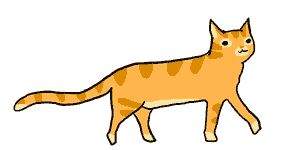

簡介
作畫：蠢羊
作詞：韓璟
作曲：田富敦
調教、動畫：小捲
日文詞：優名P

歌詞
我的喵奴是個總統喵
好無聊啊要幹什麼好呢
玩爛滑鼠踩鍵盤然後呢
盤盤的肉肉吃光
跟塑膠袋捉迷藏
哎呀喵咖啡打翻在筆電上
肚子餓餓喵奴她回來了
好多記者到底要幹什麼
「好消息阿才想想
我打了一場勝仗
從此我是總統啦」
喵～太棒啦
看我的統治範圍擴大
讓貓奴當上總統
不就是把台灣
變貓的天堂
就把總統府外種滿貓草吧
就把全台薪水換成罐罐吧
每戶人家 都要放紙箱
呼嚕呼嚕就是肚肚勉強讓你抓抓
今天想要吃魚快煎一條吧
今天想要玩耍逗貓棒在哪
聽話聽話 喵奴要聽話
如果我的心情好再幫你抓抓沙發
貓咪是全世界的國王
貓你一拳給你當獎賞